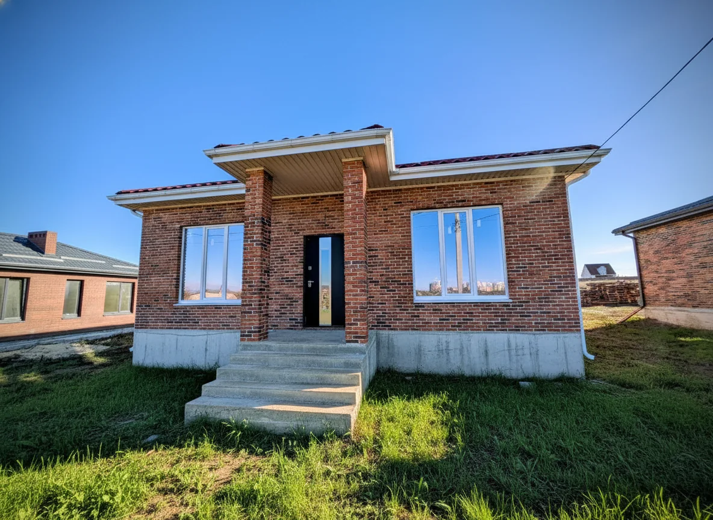
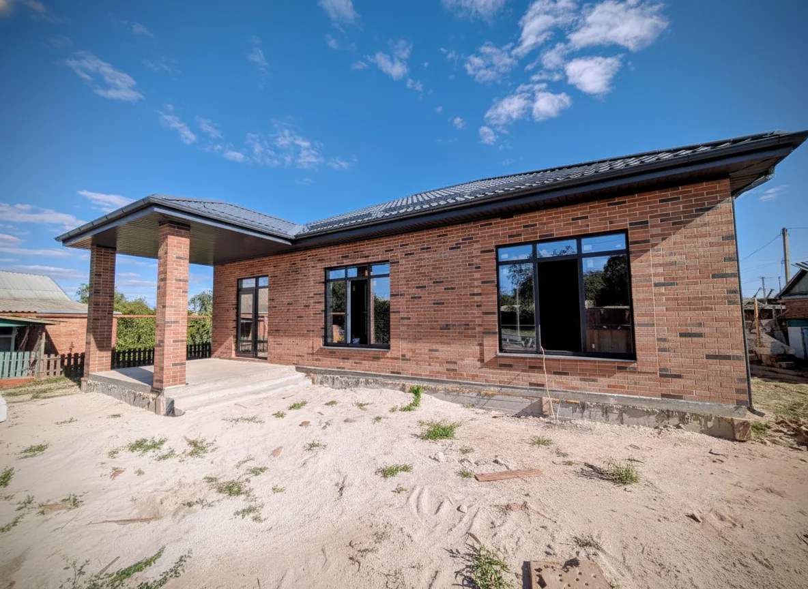
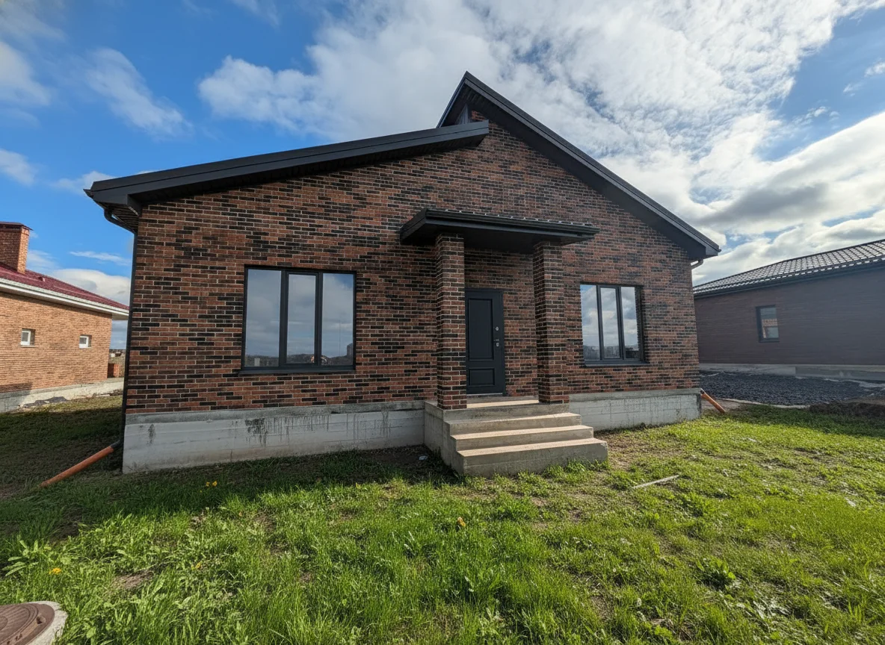
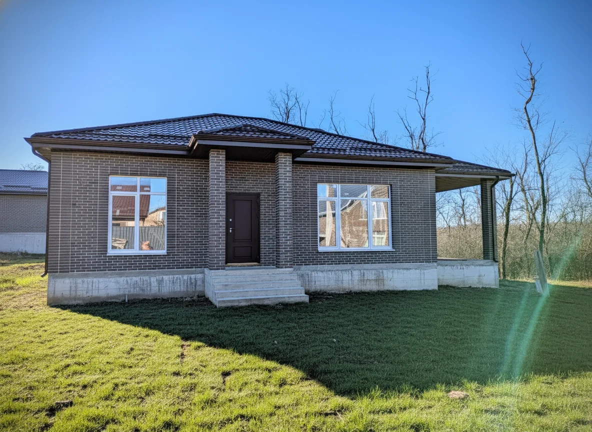

Построим Дом
Кирпичный дом 110 м2
110 м² · Ростов-на-Дону
180 дней · Под ключ
Стоимость по запросуРассчитаем стоимость похожего дома.
Семейная ипотека · подбор условий
Срок строительства — 180 дней
Каменный дом с фасадом из кирпича. Провели все коммуникации (свет, вода). Сделали предчистовую отделку
Построенный объект из портфолио компании. Стоимость и срок нового строительства определяются отдельно под ваш участок и комплектацию.
Подберём участок, проект и вариант финансирования. Кредитный брокер подаст заявки в разные банки и сравнит подходящие предложения для вашей семьи.
* Для нового строительства. Сумма зависит от состава семьи, программы и банка; сверх льготного лимита ставка может отличаться. Брокер уточнит требования к подрядчику и эскроу, взнос, полную стоимость кредита и срок. Решение принимает банк. Условия проверяем на дату обращения. О программе.
Открыть фотографию целиком · Объект на сайте строительной компании
«Построим Дом» строит дома в Ростове-на-Дону и Константиновске. Посмотрите площадь, расположение, срок строительства и особенности каждого построенного дома.
Все построенные дома компанииСравним подходящие планировки и комплектации. Заявка поступит специалисту «Домиан Квартал», а не напрямую строительной компании.

Построим Дом
110 м² · Ростов-на-Дону
180 дней · Под ключ

Построим Дом
100 м² · Ростов-на-Дону
120 дней · Под ключ

Построим Дом
100 м² · Ростов-на-Дону
180 дней · Под ключ